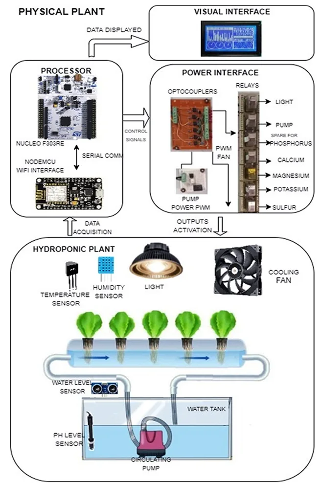
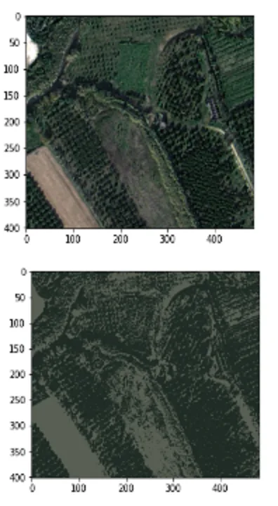

Data Science
Forecasting, segmentation and classification models — taken past the notebook into something the business uses.
PythonScikit-learnBigQuery MLTensorFlow
Proof: RFM segmentation →
Data Scientist at DataMesh Group, Sydney. Mechatronics engineer turned data practitioner — I take payment data from raw ingestion on GCP and AWS through to ML models and dashboards in production.
Selected impact · DataMesh Group
What I do
Forecasting, segmentation and classification models — taken past the notebook into something the business uses.
ELT pipelines and warehouse design on GCP and AWS, built to be cheap to run and hard to break.
SQL-first analysis, automated reporting and Tableau dashboards that turn trends into decisions.
Selected work
K-Means over standardised RFM vectors surfaced five behavioural cohorts, served to stakeholders through an API and React dashboard.
5 cohorts · 2,107 segmentsRead →

IoT-connected embedded devices that self-monitor, self-regulate and self-heal, with sensor data streamed and visualised in real time.
IEEE ICCMA 2021Read →

Unsupervised colour clustering to separate biomass-rich areas from barren land — low-cost monitoring across large areas.
K-Means · remote sensingRead →
Experience
Worked across Mexico, the USA and Australia. Spanish native, English professional, Italian B2.
Data Scientist · DataMesh Group
Sydney · revenue forecasting, ELT pipelines on GCP, data-quality observability
Junior Data Analyst · DataMesh Group
Sydney · Tableau dashboards, automated reporting on AWS Lambda and Athena
Automation Engineer · Ford Motor Company
Hermosillo, Mexico · production analytics, MTTR/MTBF reporting in MS-SQL
MSc Data Science & Innovation · UTS
MEng AI & IoT · Univ. of Sonora — BSc Mechatronics · ITESM
Data science, data engineering or analytics — happy to talk.